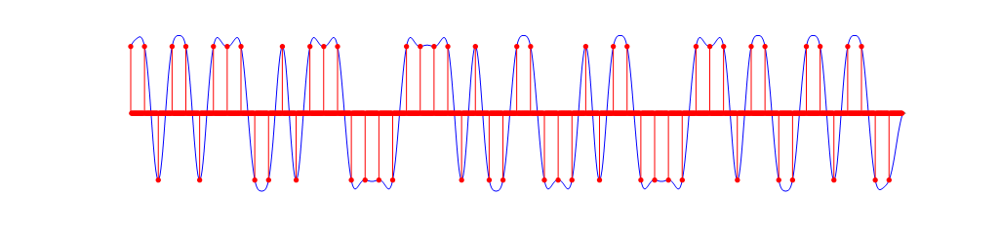
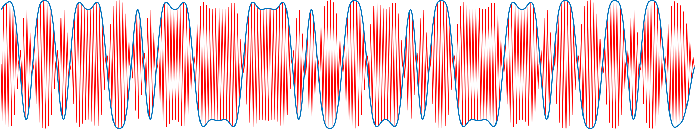
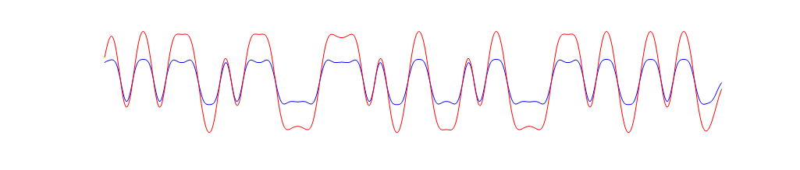

Lab 5 Primer¶
The range of complexity for a pulse amplitude modulation (PAM) transceiver system can vary drastically. A working version that demonstrates the core principles can be simulated with just a few lines of code. In practice, many additional subsystems need to be added for reliable operation.
Simulation¶
In simulation, pulse amplitude modulation is relatively straightforward, and can be achieved with just a handful steps.
1. Mapping data to pulses¶
The first step in any digital communication system is serialization, the process of converting a useful data structure into a stream of bits. For example, the following MATLAB code serializes the ascii string “meatball” into an array of 56 bits.
>> serialized_data = reshape((dec2bin(uint8('meatball'))'),[1,56])
serialized_data =
'11011011100101110000111101001100010110000111011001101100'
In 2-PAM, we map a bit of ‘0’ to a pulse with an amplitude \(-d\) and a bit of one to a pulse with an amplitude of \(+d\). A common pulse shape is the raised cosine
upsampled_data = upsample(str2num(serialized_data')*2-1,16);
pulse_shaping_filter = rcosdesign(0.8,4,16,'normal');
sequence_of_pulses = conv(upsampled_data,pulse_shaping_filter,'same')
figure; plot(sequence_of_pulses); hold on; stem(upsampled_data.*max(pulse_shaping_filter));

2. Modulation and demodulation¶
The signal above is what we call the baseband signal. Before transmitting, we want shift the spectrum to higher frequencies in a way that can be reversed at the transmitter. A simple method is with sinusoidal modulation and demodulation
f0 = 12000; fs = 48000; w0 = 2*pi*f0/fs; n = 1:length(sequence_of_pulses);
modulated = sequence_of_pulses.' .* cos(w0*n);
figure; plot(sequence_of_pulses); hold on; plot(modulated);

Demodulation can be achieved by once again multiplying by the carrier. The second multiplication by cosine introduces frequency components at \(\pm f_c\), which can be removed by a low pass filter.
demodulated = modulated .* cos(w0*n);
recovered_pulses = conv(demodulated,pulse_shaping_filter,'same');
figure; plot(sequence_of_pulses); hold on; plot(recovered_pulses);

3. Mapping pulses to data¶
We end up with a signal that can be downsampled and quantized to recover the original data
>> recovered_data = downsample(recovered_pulses,16) > 0
recovered_data =
'11011011100101110000111101001100010110000111011001101100'